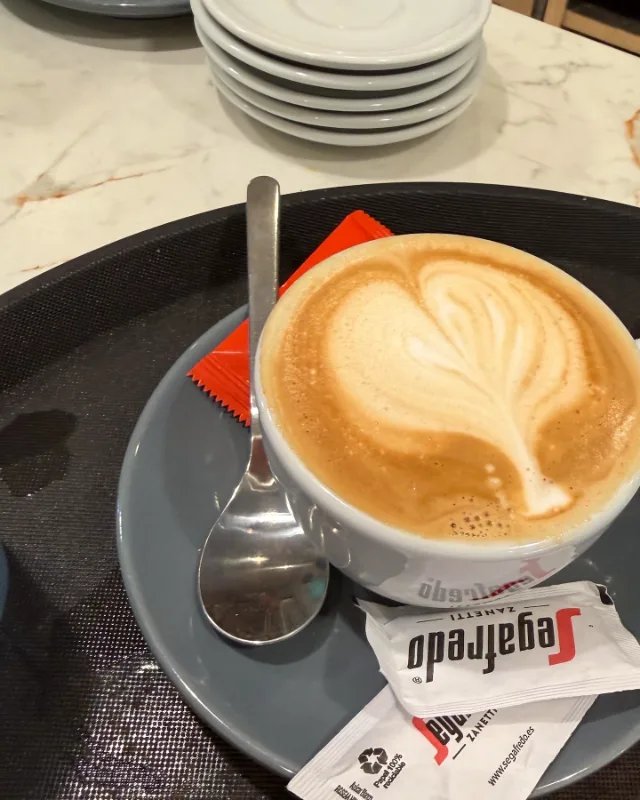
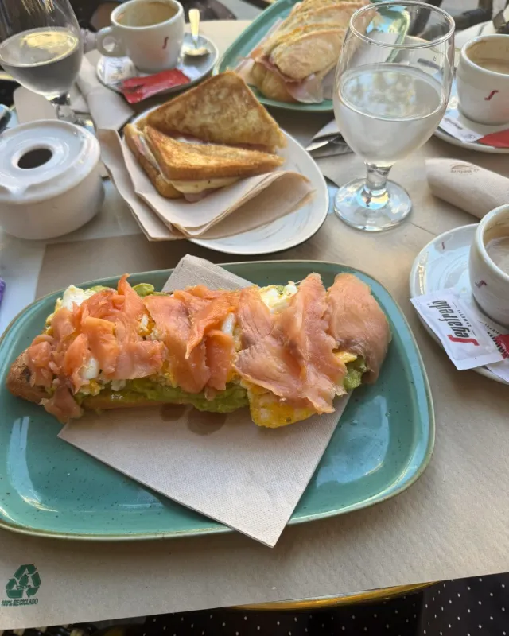

Desayunos
Desde las 9:00, con café Segafredo
- Cruasán y café3,90 €
- Bocadillo mini y café4,90 €
- Tostada con aguacate y huevo revuelto, y café8,90 €
- Tostada de salmón ahumado, huevo revuelto y aguacate
- Pan con tomate y jamón
- Bocadillos y sándwiches, como el bikini o el de lomo, bacon y queso
